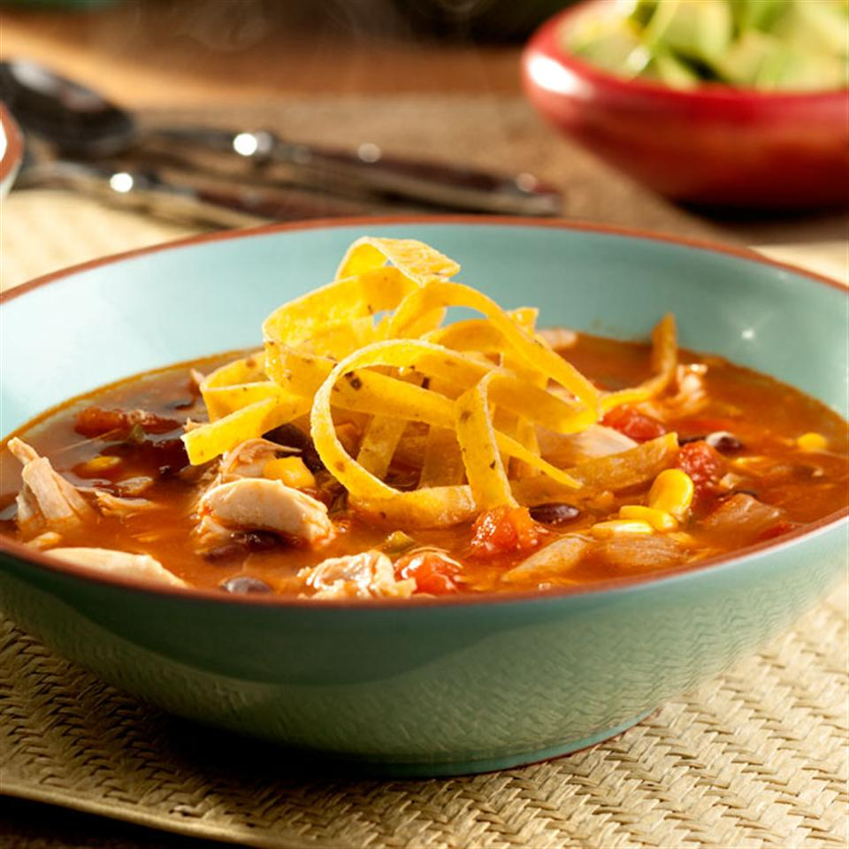

Spicy Tortilla Soup

Description
This kicked-up soup features sautéed onions and spicy peppers combined with chicken, corn, tomatoes and black beans all simmered in a delicious broth. The result is an ultra-flavorful soup your family will love!
Ingredients
- 1 teaspoon canola oil
- 1 large onion, diced
- 2 large jalapeno peppers, seeded and chopped
- 2 tablespoons tomato paste
- ½ cup frozen whole kernel corn
- 1 cup canned black beans, rinsed and drained
- 1 (14.5 ounce) can diced tomatoes, undrained
- 1 (32 ounce) carton Swanson® Mexican Tortilla Flavor Infused Broth
- 2 cups shredded cooked chicken
- 1 cup Tortilla chips or strips
Steps
- Heat the oil in a 6-quart saucepot over medium-high heat. Add the onion and peppers and cook for 2 minutes or until tender-crisp, stirring occasionally.
- Stir in the tomato paste, corn, beans, tomatoes, broth and chicken and heat to a boil. Reduce the heat to low. Cook for 5 minutes, stirring occasionally. Serve topped with crushed tortilla chips or strips, if desired.